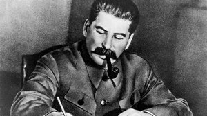
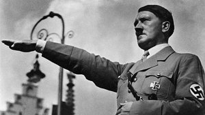

-
Joseph Stalin

How Stalin weakened nations:
- Completely industrialized Russia and the USSR, providing the breeding grounds for further economic growth
- Stalin killed approximately 50 million of his citizens for various inappropriate reasons
- Anyone who stepped in his path and got in his way of complete control over the USSR was eliminated or sent to a labor camp
- He collectified farming, as removing unnecessary farms and placing in industrial farms would increase production
- Millions of farmers refused to comply with this new law of the government taking control of their farm, and were shot or exiled in turn
- Stalin even took control of the media, and only portrayed what made him look good as a leader
- Joseph had history books rewritten to give himself a role in the rise of Russia, as well as made art and culture centered around himself
- In the late 1930s, he instituted the Great Purge, which was effectively just a law that allowed him to kill anyone he deemed a threat
- Stalin established communist governments throughout Eastern Europe in an attempt to spread his ideas and beliefs
- In 1949 he began the nuclear age by exploding an atomic bomb and launching further nuclear research and tension
More Info »
-
Benito Mussolini

How Mussolini weakened nations:
- Created the Fascist political group
- Fascist belief: Everything for the State, Nothing Outside the State, Nothing Against the State
- Controlled the government by putting fear into non-Fascists
- Destroyed anything against the Fascists
- Eliminated all enemy political parties
- Founded secret police OVRA arrested anyone and the death penalty was reintroduced
- Controlled the press, industry, and schools
- Tried to recreate the Roman Empire, exhausted Italian army by fighting in many wars against other countries
Supported and aided Hitler’s ideas
- Had a self-proclaimed "thirst for military glory" and wanted control over the militaristic policies of Italy
- Mussolini allied himself with Hitler during the interwar period
- He promoted Fascists and his allies to top government and military positions to secure his leadership
- Benito greatly weakened his nation's military by trying again and again to prove his militaristic power, but ultimately just exhausting his army and also his nation's resources
More Info »
-
Adolf Hitler

How Hitler weakened nations:
- Politically, Hitler destroyed democracy in Germany
- He slowly but surely made his way to ultimate and complete power
- All laws were sent and decided on by Hitler because he had all the power
- He made it so no laws had to be looked at by legislature, and other political parties were eliminated, which created ultimate power for Hitler so all laws were decided on or created by him
- Socially, he created a very small amount of freedom for German citizens
- Also, little amount of trust was between Hitler and the Germans
- Hitler had people arrested if he thought that they were against his type of government and ideas
- He used fear to gain ultimate power and control over Germany once he was in power Economically, Hitler could have improved the economy of Germany. However, he allowed more money to be spent then they were making
- He lowered unemployment rates from 6 million in work to 2.5 million and big business benefited
- However, Hitler did not make sure money was being spent right and all the great job opportunities and improvement went to waste and in the longer run weakened Germany more than strengthened because it caused Germany's economy to suffer
More Info »